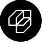
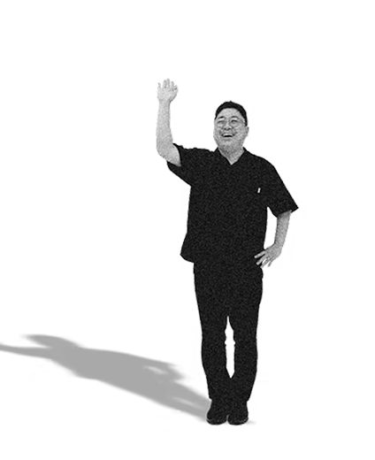

도시마다 고유한 정체성을 만들어 갑니다
한 글자에도 오늘의 도시에서 어제와 내일이 한눈에 보이도록
손끝으로
도시의
정체성을
담아내다
지역의 이름에는 수백 년의 시간과 수많은 사람들의 기억이 담겨 있습니다.
도시브랜드연구소는 그 보이지 않는 이야기를 꺼내어
눈에 보이는 형태로 빚어냅니다.
도시 브랜드 연구소
지역을 살아가는 사람들의 자부심이 될 수 있는 다양한 맞춤형 도시 브랜드 디자인 서비스를 제공합니다.
LOGO DESIGN 로고 디자인
도시의 정체성을 시각적으로 구현하다
도시의 역사와 지형, 사람들의 이야기를
한 장의 그림으로 압축합니다.
처음 보는 순간부터 그 도시가 떠오르는,
오래 기억되는 얼굴을 만듭니다.
FONT DESIGN 폰트 디자인
도시의 이야기와 목소리를 담다
그 도시에서만 들을 수 있는 목소리를
발견하고, 그것을 서체로 옮겨 냅니다.
지역의 숨결과 온도를 담아, 어디에서 사용해도
그 도시의 자부심을 느끼게 합니다.
CONSULTING 컨설팅
도시의 고유한 가치를 극대화하다
브랜드는 로고 하나로 완성되지 않습니다.
도시의 정체성을 발굴하는 연구부터 고유한 매력을
최대로 끌어낼 수 있는 전략 수립까지,
모든 과정을 함께합니다.

각 도시의 이야기를 담은 프로젝트를 진행합니다.
PROJECTS
로고 하나, 글자 하나에도 그 도시만의 결이 살아 숨쉬도록
신동엽 손글씨체
FONT DESIGN
부여의 역사와 사람을 서체에 담아, 세계 3대 디자인 어워드 iF DESIGN AWARD 수상으로 그 가치를 증명했습니다.
영월체
FONT DESIGN
영월체 제작 참여를 계기로, 단종문화제에서 손글씨 체험과 영월 지역 굿즈를 선보이며 서체·일러스트·상품을 통한 도시 브랜딩 CMY(City Marketing for Yeongwol)를 실천했습니다.
부여 정림사지체
FONT DESIGN
백제 왕도 부여의 중심 사찰 터로, 유네스코 세계문화유산에 등재된 정림사지의 역사적 가치와 건축적 질서를 서체에 담아냈습니다.
충남 논산 해월마을 브랜드 '슈퍼맘'
LOGO DESIGN
해월마을 도시재생 사업의 세 브랜드, 한다·슈퍼맘 젤라또·해월봉사단의 아이덴티티를 각각의 사업 성격에 맞게 개발했습니다.
강경마을
LOGO DESIGN, CONSULTING
강경마을 주민이 직접 참여한 워크숍을 통해 지역의 핵심 가치를 발굴하고, 세 가지 디자인 방향을 제안한 뒤 최종 로고 시스템으로 완성했습니다.
전북 무주 브랜드 '연모당'
LOGO DESIGN
다양한 로고 방향을 손스케치로 탐색하고 정제해 최종 로고 시스템을 완성했으며, 쇼핑백·패키지·스티커 등 실제 적용물까지 구현해 브랜드의 완성도를 높였습니다.
64px
도시브랜드연구소를 말하다
도시의 고유성을 드러내고 지역의 매력을 빛내는 일은 저에게 매우 의미있는 일입니다.
도시브랜드연구소는 단순한 디자인을 넘어,
지역 고유의 이야기와 가치를 담아 브랜드를 창조합니다.
이를 통해 브랜드 이미지 강화와 지역 주민과 방문객 모두가
사랑하는 공간을 만들어 갑니다.
Founder & CEO.
지난 11년 간 115+ 개 이상의
프로젝트를 진행했습니다!

115+
Projects